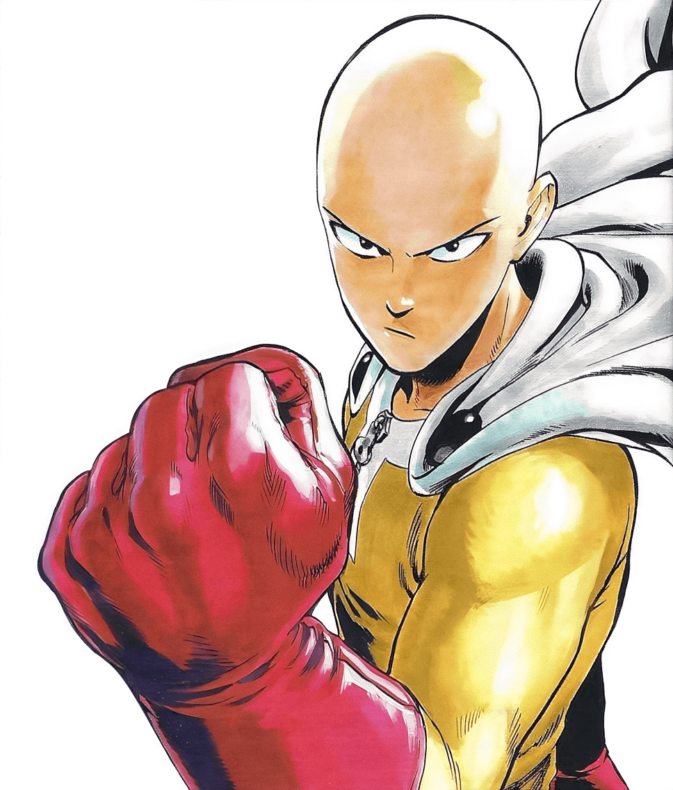
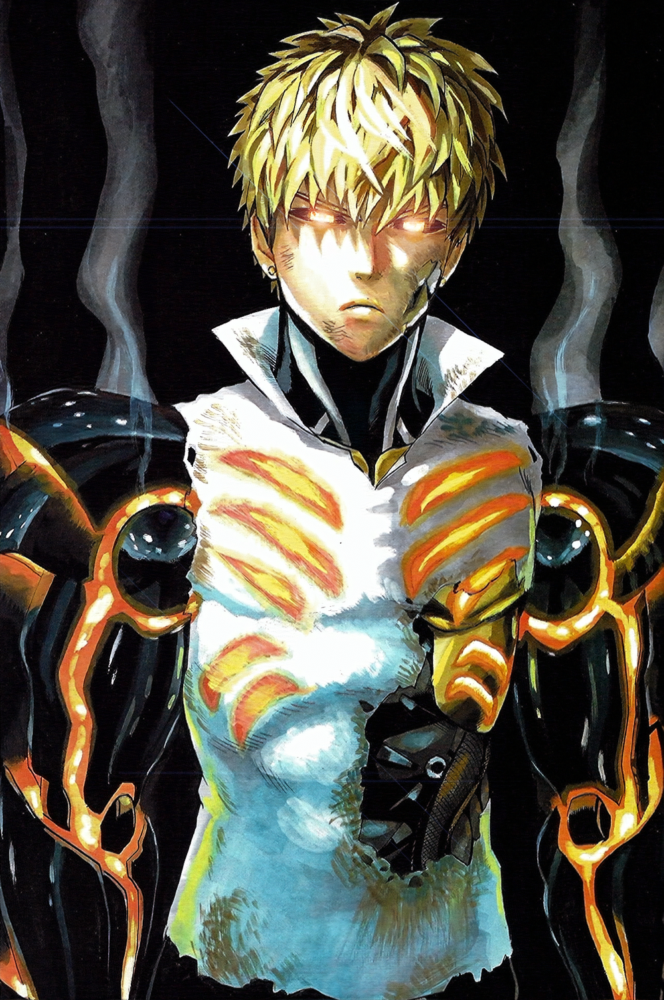
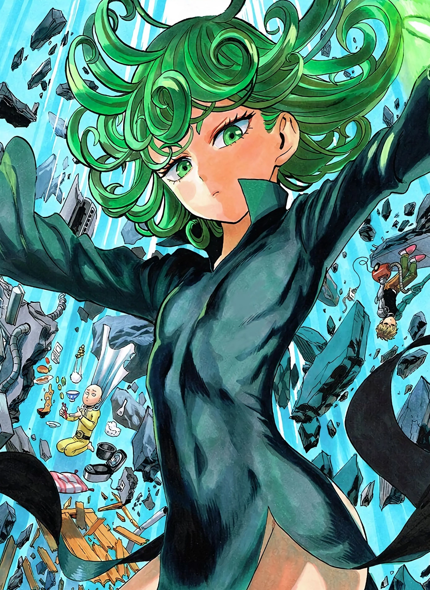

SAITAMA Character
ตัวละครในเรื่องไซตามะ
1. Saitama (サイタマ, Saitama) is the main protagonist of the series and the titular One-Punch Man. He is the most powerful being to exist in the series. Saitama faces a self-imposed existential crisis, as he is now too powerful to gain any thrill from battle.

2. Genos is a mechanical cyborg of average human height. His face and ears look like that of a normal human, made of artificial skin material, and his eyes have black sclera with yellow irises. He has spiky blond hair and his eyebrows are blond (brown in the anime). He also has pierced ears. Genos's wardrobe consists of street clothes with all of his upper-body attire being sleeveless as to allow his arms to transform without hassle. He has many different sets of arms, with varying abilities and strengths. Notable examples of his various "arms" are those he used in his sparring match against Saitama

3.Tatsumaki (タツマキ, Tatsumaki; Viz: Tornado), also known by her hero alias Tornado of Terror (戦慄のタツマキ, Senritsu no Tatsumaki; Viz: Terrible Tornado), is the S-Class Rank 2 professional hero of the Hero Association. She is recognized as one of the Hero Association's most powerful heroes.
4. Bang (バング, Bangu), also known by his hero alias Silver Fang (シルバーファング, Shirubā Fangu), is a professional hero, a martial arts master, and the creator and teacher of Water Stream Rock Smashing Fist. He is the 3rd highest ranked S-Class hero of the Hero Association and is recognized as one of its most powerful heroes. He is currently settled in Z-City.
5.Blast (ブラスト, Burasuto) is the S-Class Rank 1 professional hero of the Hero Association. Without the knowledge of Saitama's strength, he is largely suggested to be the Hero Association's most powerful hero. He currently appears to be going to various places in order to collect the Mysterious Cubes, which is a hobby of his. Only a few select Hero Association staff members have the means to communicate with him.
6.Garou (ガロウ, Garō; Viz: Garo) is a villain, a martial arts prodigy, the self-proclaimed "Hero Hunter," and a major adversary of the Hero Association and Monster Association. He is a former disciple of Bang but was expelled from his dojo for going on a rampage. Because of his fascination with monsters, he is commonly called the "Human Monster." Sitch of the Hero Association views him as a grave threat to the organization despite being only a human.